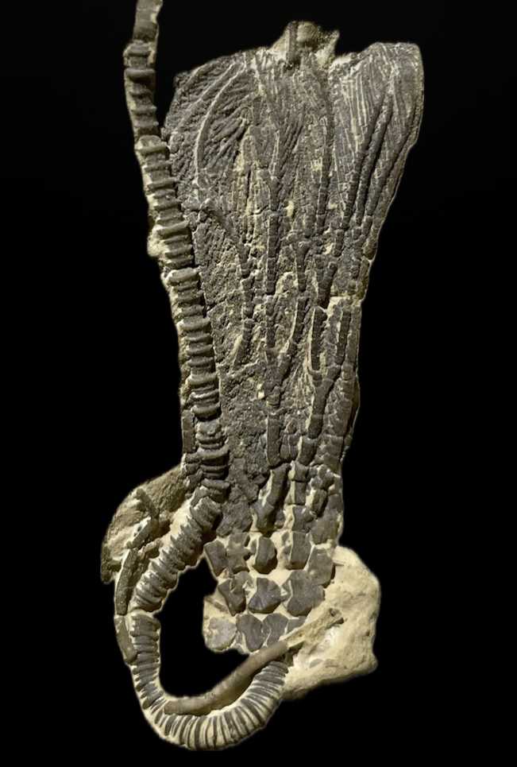

HOME
Ptychocrinus splendens
• Ordovician
• Girardeau Formation
• Cape Girardeau, Missouri, USA
Size: 4 cm crown
Diagnosis indicates "stellate ridges on the iBrr of adults; arms branching on iiBrr13 to 15; arms commonly bifurcate again on iiiBrr30 to 40." (Brower 1972)
|

|
Copyright © 2024 by Samuel Kim, all rights reserved